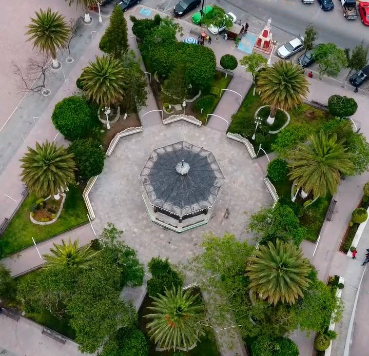

El Parque Principal de Tlacotepec se encuentra en el centro de Tlacotepec, junto a la Parroquia de la Santa Cruz. Es un espacio público donde las familias y visitantesp ueden convivir, descansar y participar en eventos culturales, cívicos y recreativos. Además, es uno de los puntos más representativos y concurridos del municipio.